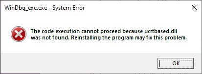
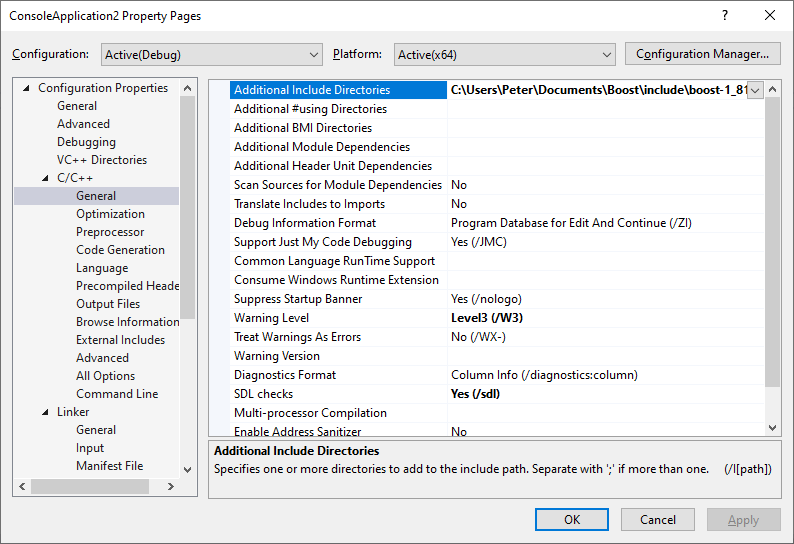
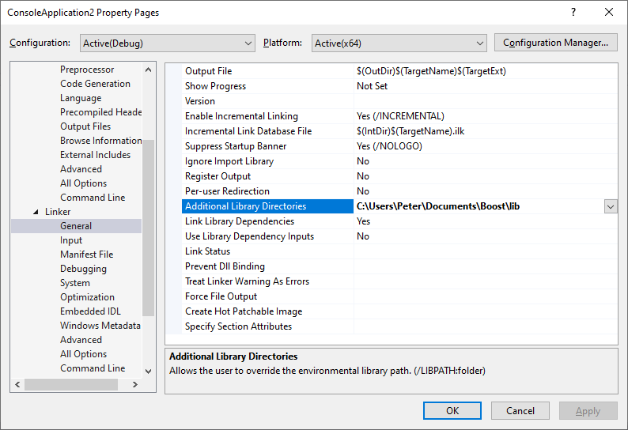
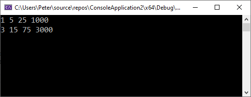
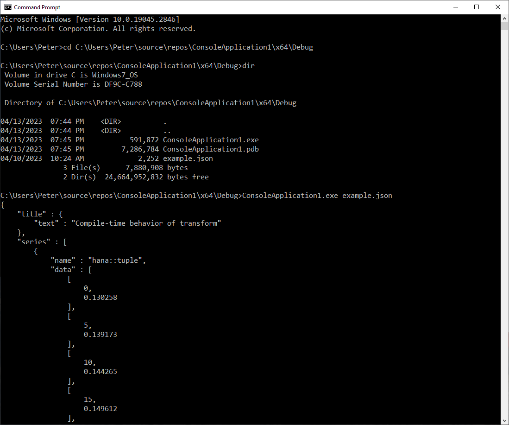

Getting Started
This section explains how to get your first Boost app running. Here’s a step-by-step guide for installing from source.
Prerequisites
The only prerequisite for installing boost is a C++ compiler. If you already have that set-up, please skip to the Binaries or From Source section.
If you don’t have access to a C++ compiler yet, here are a few ways to get started:
-
Windows
-
Linux
-
macOS
Users on Windows usually get started with the Visual Studio compiler. You can download the Microsoft Visual Studio 2022 (Community Edition) as the IDE and C++ compiler in these examples.
Users on Linux usually get started with GCC. You can check if GCC is already installed with:
g++ --versionOtherwise, you need to install the necessary build tools and libraries. For Ubuntu or Debian-based distributions, use the following commands:
sudo apt update
sudo apt install build-essential python3 libbz2-dev libz-dev libicu-devFor Fedora systems, use the following commands:
sudo dnf update
sudo dnf install gcc-c++ python3 bzip2-devel zlib-devel libicu-develFor Redhat-based systems (RHEL, CentOS Stream, etc.), use the following commands:
sudo yum update
sudo yum install gcc-c++ python3 bzip2-devel zlib-devel libicu-develFor Arch-based systems (Arch Linux, Manjaro, etc.), use the following commands:
sudo pacman -Syu
sudo pacman -S base-devel python3 bzip2 zlib icuUsers on macOS usually get started with Clang. You can check if Clang is already installed with:
clang++ --versionBinaries
Installing Boost with a package manager might simplify the process and ensure that all dependencies are installed correctly. In this guide, we will discuss two types of package managers: C++ Package Managers package managers such as Conan and Vcpkg, and System Package Managers, such as APT and Homebrew.
|
While using a package manager can simplify the installation process, there are some potential downsides to consider, such as a lack of control over the installation process and potential version conflicts with other installed software. We will discuss these in more detail in the sections below. If you want to ensure you have the latest version Boost, see the instructions to build and install Boost from source. |
C++ Package Managers
C++ package managers are a popular choice for managing dependencies in C++ projects. They provide a simple and consistent way to download, configure, and install libraries as a process that is replicable on various platforms.
-
Vcpkg
-
Conan
To install Boost with Vcpkg, you can run a command like:
vcpkg install boostor adding boost to your vcpkg.json manifest file:
{
"$schema": "https://raw.githubusercontent.com/microsoft/vcpkg-tool/main/docs/vcpkg.schema.json",
"name": "my-application",
"version": "0.15.2",
"dependencies": [
"boost"
]
}You can also install individual boost modules by providing their names as a suffix:
vcpkg install boost-variant2 boost-describeor adding the modules to your vcpkg.json manifest file.
{
"$schema": "https://raw.githubusercontent.com/microsoft/vcpkg-tool/main/docs/vcpkg.schema.json",
"name": "my-application",
"version": "0.15.2",
"dependencies": [
"boost-variant2",
"boost-describe"
]
}For most users, Vcpkg recommends Manifest mode. Follow the instructions in the introduction guide to manifest files.
To consume the libraries transparently from CMake, one can use the Vcpkg toolchain with the CMAKE_TOOLCHAIN_FILE configuration option.
You can install Boost with Conan through the boost package.
However, these installation methods are not officially supported, which means the packages are not regularly tested by Boost authors.
System-Level Installation
Depending on your operating system, you may have different package managers available. For instance, on Debian-based Linux distributions, APT is a popular choice, while macOS users often use Homebrew, and Windows users may prefer Chocolatey. Depending on your variant of Unix, you can use a package manager such as apt, dnf, yum, or pacman.
|
While using a system package manager has its advantages, there are also some drawbacks to consider. These include lack of control over the installation process, and the high likelihood of using outdated or unsupported versions of the Boost libraries, which may be several years old. |
-
Ubuntu
-
Fedora
-
CentOS
-
Arch
-
Homebrew
To install the Boost C++ libraries onto Debian-based systems (such as Debian, Ubuntu), you can use the package manager apt.
# Update your package list
sudo apt update
# Install the Boost development libraries
sudo apt install libboost-all-devTo install the Boost C++ libraries on Fedora, you can use the package manager dnf.
# Update your package list
sudo dnf update
# Install the Boost development libraries
sudo dnf install boost-develThe Boost libraries are usually available as pre-compiled packages in the official Fedora repositories.
To install the Boost C++ libraries on CentOS, you can use the package manager yum.
- Note
-
If you are using CentOS 8 or later, you might need to enable the PowerTools repository to get the Boost development libraries:
sudo yum config-manager --set-enabled powertools# Update your package list
sudo yum update
# Install the Boost development libraries
sudo yum install boost-develThe Boost libraries are usually available as pre-compiled packages in the official CentOS repositories.
To install the Boost C++ libraries onto Arch-based systems (such as Arch Linux, Manjaro), you can use the package manager pacman.
# Update your package list
sudo yum update
# Install the Boost development libraries
sudo pacman -S boostHomebrew is a package manager for macOS that allows users to easily install, manage, and update a wide range of software packages and libraries from the command line.
# Update your package list
brew update
brew upgrade
# Install the Boost development libraries
brew install boostHomebrew will download and install the Boost libraries and their dependencies. To verify that the Boost libraries are installed correctly, you can run the following command:
brew list boostOnce the installation is complete, the Boost libraries will be installed on your system, typically in /usr.
To verify that the Boost libraries have been installed correctly, you can check the version number:
cat /usr/include/boost/version.hpp | grep "BOOST_LIB_VERSION"This command should output the Boost version installed on your system.
From Source
Download Boost
-
B2 (Recommended)
-
CMake
-
Navigate to https://www.boost.org/users/download/ and under Current Release/Downloads, download the Boost distribution. For instance:
-
Windows: boost_1_89_0.zip
-
Unix variants: boost_1_89_0.tar.bz2
-
-
After the download has completed in your Downloads folder, right-click on the compressed file and extract it to a folder.
| B2 is the officially supported build system used by the Boost libraries. |
-
Navigate to https://github.com/boostorg/boost/releases and under Releases, download the Boost distribution. For instance:
-
Windows: boost-1_89_0.zip
-
Unix variants: boost-1_89_0.tar.bz2
-
-
After the download has completed in your Downloads folder, right-click on the compressed file and extract it to a folder.
| You don’t need to build Boost with CMake to be able to use Boost with CMake. CMake integration will work fine even if you install Boost with B2. |
Or you can streamline the whole process directly from the command line:
-
Windows
-
Linux
-
macOS
-
Git
curl https://archives.boost.io/release/1.89.0/source/boost_1_89_0.zip (1)
tar -xf boost_1_89_0.zip (2)
cd boost_1_89_0 (3)wget https://archives.boost.io/release/1.89.0/source/boost_1_89_0.tar.bz2 (1)
tar xf boost_1_89_0.tar.bz2 (2)
cd boost_1_89_0 (3)| 1 | Download the boost distribution boost_1_89_0.tar.bz2 |
| 2 | Extract the files into boost_1_89_0 |
| 3 | Change the current working directory to boost_1_89_0 |
curl https://archives.boost.io/release/1.89.0/source/boost_1_89_0.tar.bz2 (1)
tar xf boost_1_89_0.tar.bz2 (2)
cd boost_1_89_0 (3)| 1 | Download the boost distribution boost_1_89_0.tar.bz2 |
| 2 | Extract the files into boost_1_89_0 |
| 3 | Change the current working directory to boost_1_89_0 |
You can clone and initialize the complete Boost super-project directly from GitHub with:
git clone https://github.com/boostorg/boost.git -b boost-1.89.0 boost_1_89_0 --depth 1 (1)
cd boost_1_89_0
git submodule update --depth 1 --init --recursive (2)| 1 | Clone the Boost super-project |
| 2 | Initialize all boost modules |
Individual Modules
The process above downloads all boost libraries, which is the usual process in a local installation. In projects where only a subset of the Boost libraries is required, which is usually desired in Continuous Integration Systems, the following procedure can be used:
git clone https://github.com/boostorg/boost.git -b boost-1.89.0 boost_1_89_0 --depth 1 (1)
git submodule update --depth 1 -q --init tools/boostdep (2)
git submodule update --depth 1 -q --init libs/unordered (3)
python tools/boostdep/depinst/depinst.py -X test -g "--depth 1" unordered (4)| 1 | Download the Boost super-project, which contains references to all Boost libraries |
| 2 | Initialize Boost.Boostdep used to determine internal boost dependencies |
| 3 | Initialize Boost.Unordered. Repeat this step for any other modules you need. |
| 4 | Initialize any dependencies of Boost.Unordered. Repeat this step for any other modules you need. |
This procedure requires git and python.
The following steps in this document apply to both methods of installing Boost.
The only difference is what libraries will be available.
Bootstrap
If you followed the steps above, your current working directory should be boost_1_89_0.
Otherwise, open up a command line terminal, and navigate to the boost folder you extracted.
-
B2 (Recommended)
-
CMake
The Boost libraries are built using a custom build app called B2. This app itself is built by running the bootstrap script.
This is the usual procedure to configure, build and install Boost with B2:
If your location has a space in the name, you will need to surround the path in quotes in the commands that follow.
Windows:
bootstrap.bat
b2
b2 install --prefix=C:\BoostIf you get an error during the build process such as the following, you probably do not have an up to date and full installation of C++ on your machine. Go back to Prerequisites and install or update your version of Visual Studio.

Unix variants:
./bootstrap.sh --prefix=/usr/local
./b2
./b2 installYou can adjust the installation prefix to your preference in this command.
The build process creates all variants of each library. For example, there may be Release and Debug variants, or possibly Multithreaded and Static runtime variants. Also, libraries that are header-only (in other words, do not require being built) are copied to your installation folder.
Instead of building everything, you can specify which libraries to build using the --with-libraries=librarya,libraryb option for bootstrap.sh. Use the --show-libraries to see which libraries need to be built.
|
You can also build the Boost libraries with CMake. This is the usual procedure to build and install Boost with CMake:
mkdir __build
cd __build
cmake ..
cmake --build .
cmake --build . --target installIf you are using a multi-config generator, such as Visual Studio, you can install the Debug and Release variants of the library separately with:
cmake --build . --target install --config Debug
cmake --build . --target install --config ReleaseAlthough both the B2 and the CMake scripts work fine, the final installed libraries will have different layouts for historical reasons. Both the CMake integration scripts and the libraries will be installed under different paths and this can create incompatibilities between Boost installations.
| You don’t need to build Boost with CMake to be able to use Boost with CMake. CMake integration will work fine even if you install Boost with B2. |
You can find more information about the limitations of a CMake infrastructure on boostorg/cmake
Environment variables
We recommend you update your environment variables after installing Boost. When you update your environment variables, you are telling your operating system and other tools where to look for the Boost libraries and headers.
-
Windows
-
Linux
-
macOS
set BOOST_ROOT=C:\boost (1)| 1 | Specify the root directory of the Boost C++ libraries so other tools can find it |
Replace C:\boost with the prefix directory you specified during the installation, if different.
|
export BOOST_ROOT=/usr/local (1)
export LD_LIBRARY_PATH=/usr/local/lib:$LD_LIBRARY_PATH (2)
export CPLUS_INCLUDE_PATH=/usr/local/include:$CPLUS_INCLUDE_PATH (3)| 1 | Specify the root directory of the Boost C++ libraries so other tools can find it |
| 2 | Specify additional directories to search for shared libraries when executing a program |
| 3 | Specify additional directories to search for C++ header files |
Replace /usr/local with the prefix directory you specified during the installation, if different.
|
You can add these export commands to your ~/.bashrc or ~/.profile file to make the changes permanent.
export BOOST_ROOT=/usr/local (1)| 1 | Specify the root directory of the Boost C++ libraries so other tools can find it |
Replace /usr/local with the prefix directory you specified during the installation, if different.
|
You can add these export commands to your ~/.bashrc or ~/.profile file to make the changes permanent.
Your First App
Header-only libraries
Let’s start by using a header-only library.
Copy the following program into a file called example.cpp.
// Include a header from the Boost.Lambda library
#include <boost/lambda/lambda.hpp>
#include <iostream>
#include <algorithm>
int main()
{
using namespace boost::lambda;
typedef std::istream_iterator<int> in;
std::cout << "Enter numbers: ";
// Read a sequence of integers from standard input, use Boost.Lambda to multiply each number by three, then write it to the standard output
std::for_each(
in(std::cin), in(), std::cout << (_1 * 3) << " ");
}We can now compile this program:
-
CMake
-
Visual Studio
-
By Hand
You can use CMake to configure a project to use Boost and your example.cpp.
Here’s an example CMakeLists.txt file that uses Boost:
cmake_minimum_required(VERSION 3.8...3.31)
project(MyProject)
find_package(Boost REQUIRED)
add_executable(MyProject example.cpp)
target_link_libraries(MyProject Boost::headers)Store this file next to your example.cpp and run the basic CMake workflow:
mkdir build (1)
cd build (2)
cmake .. -D BOOST_ROOT=path/to/boost_1_89_0 (3)
cmake --build . (4)| 1 | Create a build directory which should store the results |
| 2 | Change the current working directory to build |
| 3 | Run the CMake configure step, providing it with the Boost directory |
| 4 | Build the project |
If using CMake >=3.13, this can be simplified to:
cmake -S . -B build -D BOOST_ROOT=path/to/boost_1_89_0
cmake --build buildIn either case, the resulting executable should be available in the build directory.
-
Open Visual Studio and select Create a new project
-
Choose Console App from the range of project templates.
-
Change the names in the Configure your new project dialog, or leave the defaults, and click Create.
-
Replace all the boilerplate content of the .cpp file with the contents of the
example.cppfile, noting the inclusion of the header from Boost: lambda.hpp. -
Right-click on the name of the project in the Solution Explorer pane, and select Properties.
-
Under C/C++ select General, then click on Additional Include Directories
-
Add the path to your Boost include folder, that will have been built in the previous section.

-
Next, still in the project properties, select Linker, then General, and locate the Additional Library Directories
-
Add the path to the Boost lib folder.

-
Click OK to accept your input.
You can already run your example from Visual Studio:
-
In the Debug menu, select Start Without Debugging, or press the F5 key.
-
A Command Prompt should open up, so enter a list of numbers separated by spaces, and then Enter.
-
You should get a line of numbers, your originals multiplied by 3.

|
Visual Studio provides support for CMake since Visual Studio 2017. CMake is a cross-platform build system that can generate build files for a variety of build tools, including Visual Studio solutions, makefiles, and ninja files. By supporting CMake, Visual Studio is able to provide a consistent development experience across multiple platforms and build tools. Additionally, the ability to generate CMake projects from Visual Studio allows developers to take advantage of Visual Studio’s debugging and profiling tools while still using their preferred build system. While Visual Studio provides a user friendly environment for building software, it may not always be the best choice for managing complex projects with multiple dependencies. In such cases, it is recommended to consider using CMake, a popular and flexible build system that can generate build files for a variety of build tools. You can have the option of using CMake to manage your complex projects, while still using Visual Studio’s robust development and debugging features. |
In the directory where you saved example.cpp, issue the following command:
Visual Studio Compiler:
cl /I C:\boost\include example.cppGCC:
g++ -I /usr/local/include example.cpp -o exampleClang:
clang++ -I /usr/local/include example.cpp -o example
Replace C:\boost or /usr/local with your Boost installation prefix if necessary.
|
|
It is generally not recommended to use these commands by hand for complex projects, as managing all the compile and link options can quickly become unwieldy. Using a build system like CMake or Make can greatly simplify the process of building and managing a project, particularly when dealing with large codebases or dependencies. Using a build system also has other advantages, such as easier dependency management, the ability to easily configure the build for different platforms or compilers, and the ability to easily integrate with other tools such as version control systems and automated testing frameworks. |
To test the result, run the executable from the path where it was built:
-
Windows
-
Linux
-
macOS
echo 1 2 3 | exampleecho 1 2 3 | ./exampleecho 1 2 3 | ./exampleDid you get the expected result?
Compiled Libraries
In this section, we will locate an example from GitHub, and then build and run a project based on the example.
For most Boost libraries, there is an example sub-folder containing a range of examples.
For this guide, we will locate an example that reads a JSON file, and pretty-prints its contents.
Copy all the code from json/example/pretty.cpp into your example.cpp.
Let’s compile it:
-
CMake
-
Visual Studio
-
By Hand
Edit the contents of CMakeLists.txt:
cmake_minimum_required(VERSION 3.8...3.31)
project(MyProject)
find_package(Boost REQUIRED COMPONENTS json)
add_executable(MyProject main.cpp)
target_link_libraries(MyProject Boost::json)In this example, we explicitly require json as Boost.Json is a compiled library.
Compiled libraries need to be explicitly required and linked separately.
Run the commands for the usual CMake workflow once more to build the executable.
| Note how the difference between header-only and compiled libraries is transparent when using a build system. |
-
Create a new Visual Studio C++ Console App. Name it JsonPrint.
-
Update both the additional include directories, and additional library directories, as you did for the previous section.
-
Copy all the code from https://github.com/boostorg/json/blob/develop/example/pretty.cpp, and use it to replace all the default content of the project’s cpp file.
You can already run your example from Visual Studio:
-
Search your computer for any JSON file, unless you have one you would like to use already. Record the full path to that file.
-
In Visual Studio, locate and select Build Solution.
You should get neatly formatted output:

-
If your JSON included symbols such as the umlaut, these will not be rendered correctly unless you change the format of your Command Prompt to UTF-8. By default, a Command Prompt supports a code page numbered 437. To change the code page to UTF-8, type
chcp 65001. -
If you get compile errors such as
cannot open file 'libboost_json-vc143-mt-gd-x64-1_81.lib'you have probably not entered the Additional Library Directories correctly.
Repeat the instructions to read the compile the executable:
In the directory where you saved example.cpp, issue the following command:
Visual Studio Compiler:
cl /I C:\boost\include /link C:\boost\lib\libboost_json-vc71-mt-d-x86-1_34.lib example.cppGCC:
g++ -I /usr/local/include example.cpp -L /usr/local/libboost_json.a -o exampleClang:
clang++ -I /usr/local/include example.cpp -L /usr/local/lib -l boost_json -o example
Replace C:\boost or /usr/local with your Boost installation prefix if necessary.
|
As Boost.Json is a compiled library, we need the linker option in our example.
The name of the library file might vary according to your architecture and the options provided to b2 while installing boost.
Check the lib in your installation prefix.
Search your computer for any JSON file, unless you have one you would like to use already. Record the full path to that file and run the example with:
-
Windows
-
Linux
-
macOS
example "path/to/json/file.json"./example "path/to/json/file.json"./example "path/to/json/file.json"Did you get the expected result?
Summary
Although the samples you have now built and run are quite simple, if you have got this far successfully, it means your build, installation and project linking are all working correctly. Great job!
Next Steps
You might like to scan the examples folders of some of the other libraries that you are interested in, and create and run projects to get them running.
Once you are more experienced with Boost, you might like to build and install only those libraries you require. To this end, it can be helpful to know the dependencies that your target libraries have. This includes both primary dependencies (the libraries directly referenced by your target library) and secondary dependencies (the libraries not referenced by your target library, but referenced by the primary or other secondary libraries). To aid you in determining this information, refer to the Boost Dependency Report. This report is updated with each public release of Boost.